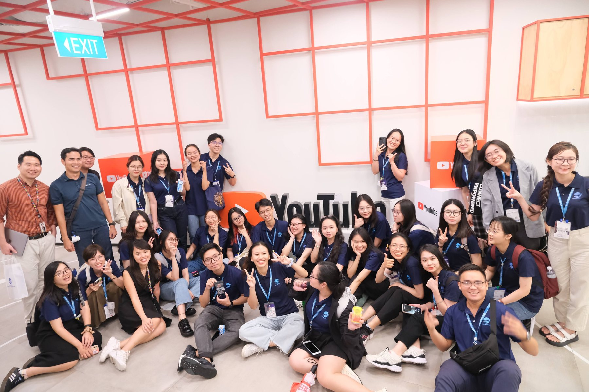
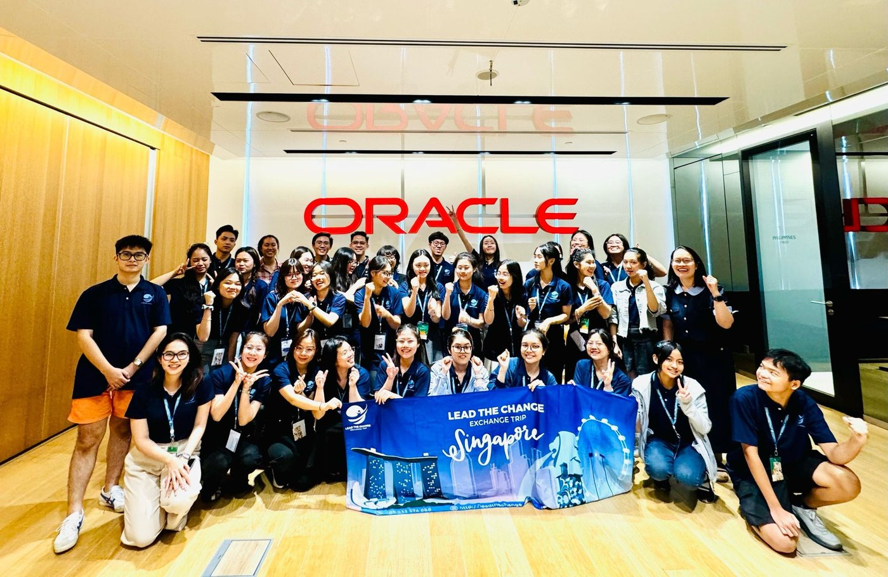
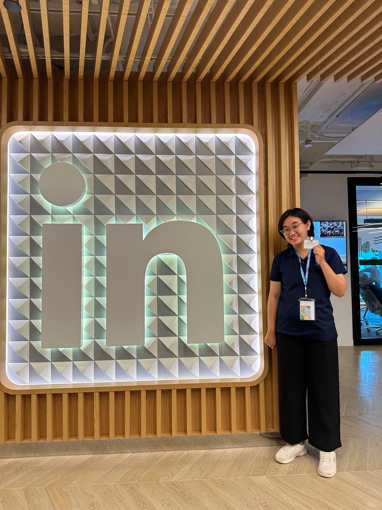

Nov 10, 2026 / 4 min read / #career #productdesign
Dad, I want to become a Product Designer!
My 2-year journey to a design career.
That was the message I sent to my father at 2:00 AM, right after walking away from my very first job. It was a role that had given me incredible travel opportunities, taking me across borders to visit the headquarters of tech giants like Google, Oracle and LinkedIn in Singapore. Standing inside those spaces, looking at how world-class products were shaped, a quiet realization struck me: this is the life I want. I need to dream bigger.



Before that moment, my path had been rooted in business and marketing. As a graduate of the University of Economics, my first real spark for technology came when I led the campus Startup Club. Meeting so many different founders opened my eyes to innovation.
Later, working directly alongside a Product Designer at a startup became my true turning point. I watched in awe as vague ideas on paper turned into clear, working web apps. I realized Product Design was far more than adjusting pixels in Figma. It sits where deep user empathy, seamless user journeys and real business constraints meet.
I didn't just want to sell a product someone else had made. I wanted to be part of making it.
In my marketing role, even while building websites with WordPress and running events, I felt a disconnect I couldn't ignore. I craved being part of the creation itself: taking new ideas and bringing them into total clarity.
That midnight text to my dad was the moment I chose to stop playing it safe. I immersed myself in learning Figma, mastering UX/UI foundations and taking full ownership of my career transition.
Looking back nearly two years later, stepping into Product Design remains the best decision I've ever made. Bringing my business sense into every interface, solving complex technical problems and working with brilliant people every day has proven one thing: I didn't just change my job title. I designed the life I wanted to live.